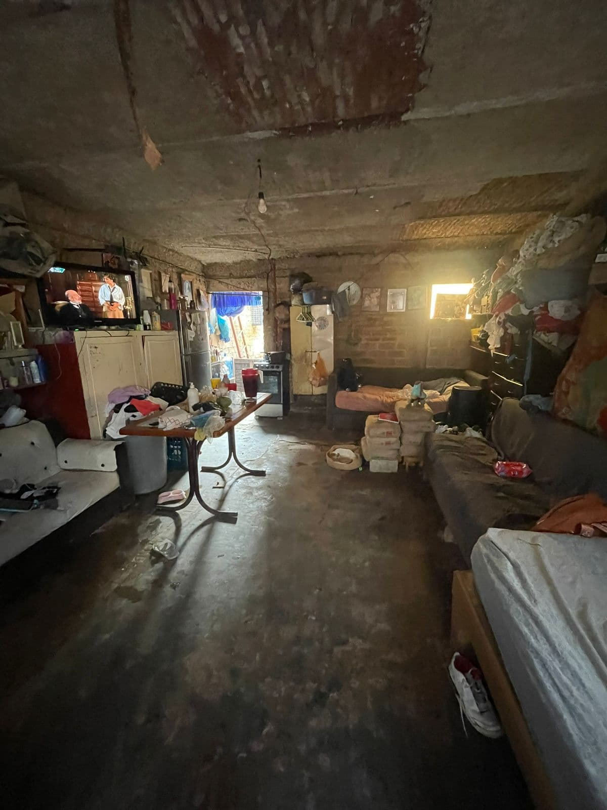

La vida de Mario
Acompañé a Mario al doctor. Mario tiene 50 y trabaja como albañil. Desde hace 20 años, Mario tiene diabetes.
Mario se esfuerza mucho por llevar comida y sustento a su casa, todos los dias toma dos camiones que despues de 2 horas, lo llevan al trabajo
Desde hace unos años Mario tiene piedras en la vesicula. Se ha intentado operar en el IMSS y en el hospital civil. Entre ineficiencia y burocracia por una y otra cosa, no lo ha podido hacer.
"A veces me levanto de rodillas, llorando del dolor" - me dijo. "La doctora me dice que con esta condicion no debería de estar trabajando de albañil" - comentó - y riendose sínicamente completo con: mi vieja trabaja mucho, si dejo de trabajar se le va a cargar la mano.
Hoy fuimos al doctor, con el rostro un poco amarillo lo recogí en una parada de camion. Llegamos a la clínica, el doctor nos recibió y le empezó a hacer preguntas a Mario para llenar su expediente clinico.
Recuerdo sentir tristeza escuchando todas las limitaciones y dificultades que ha vivido. Despues de revisar los estudios detallados que dias antes Mario se hizo y despues de hacer una exploración fisica nos explicó que era importante operarlo para sacarle la vesicula lo antes posible.
Empecé a notar nervioso a Mario (con justa razon), intentando ayudar a que lo sacar le pregunté: "qué te preocupa?"
el dinero, el contestó....
Comparto esta historia con la intención de generar mas empatía y consciencia de clase.
Mario es el esposo de Maribel, la señora que nos ayuda con la limpieza. Ellos viven con dos de sus hijos y 3 de sus nietos en una casa limitada, sin servicios basicos, con 2 cuartos.

Surgen muchas preguntas importantes con esta historia...
¿Por qué hay personas viviendo en estas condiciones?
¿Cómo hacer más justa la vida de estas personas?
¿Por que lo hemos normalizado, por que no hacemos nada? ¿Como hacer algo?
Me encantaría responder esas preguntas, hay que ser honestos y aceptar que no hay respuesta facil.
Creo que un punto de partida es empezar desglosando el problema en pequeños problemas. Es decir, mejorar la vida de personas como mario en el aspecto de vivienda, en el aspecto económico, en el espacio de la salud.
Ademas de seleccionar un espacio (salud,vivienda, economia) tambien debemos de seleccionar a un grupo de personas, en este caso, trabajadores independientes informales, en el sector de la construcción.
Esto permite hacer proyectos con mas estructura, ya que probablemente, este grupo de personas tiene estilos de vida similares, horas de trabajo similares y por lo tanto algunaa necesidades similares.
Este es un comienzo. Se necesitan esfuerzos inteligentes, sistematicos y constantes para resolver estos problemas.
Espero haber movido algo en ti, sigamos pensando en como ayudar a Marios.